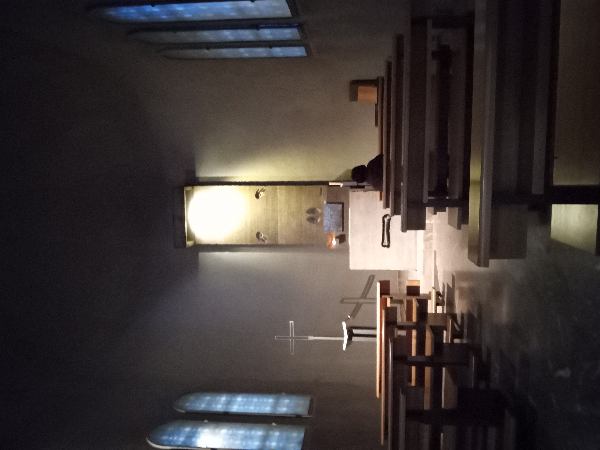

Week 2: 28/3/2022 - 3/4/2022¶
This will be the first week of classes. Hard to know how that will change these entries though I DON’T propose to document my course materials here in any way. We’ll see what transpires. Still lots of things going on put perhaps a little less for the first part of the week when we have classes.
28/3/2022 Monday¶
First day of regular COCC classes. Actually totally in line with our home institution which is starting spring term today. Today was the first day of GS104. Couple of small unexpected things. Thing 1, when I go in the building on the ground floor I am expected to ask for the key to the room that I will be teaching in up on the 5th floor. I have actually forgotten which room I’m in tomorrow although I think it’s Aula Gràcia. Perhaps today’s classroom was Aula Born? Sheesh – have to check tomorrow. Thing 2, the physical layout of the classroom suggests some different internal models for teaching. There is a large monitor set up facing the room in lieu of a projection system. The Mac mini and monitor is positioned behind the large monitor effectively hiding me from the students. It also means I have to disappear behind the large monitor to change anything. To me it suggests a very teacher controlled environment. I wonder how much of that feeling is unfortunate stereotyping on my part. Anyways….I will be experimenting with changing the set up tomorrow.
I hope I established a good model for the classes that I will be teaching as active discussion attempting to connect the broader topics we’re talking about (physics, astronomy, music) to our experiences in this new and intriguing culture. I want to see if I can get them to notice and wonder about even little things that are happening around them. As an example we talked about how you stand in a metro train and why. Which directions do you need to support at different parts of the trip? How does this connet to the patterns of movement of the train? We also started the discussion about using consistent units so that you can make comparisons between different settings effectively. I won’t be pushing the unit conversion in the same way but it will still be there. There was a very different sense of their response to a question I commonly ask in this class. There is a graph that we examine that shows the US effectively using 2x as much energy as Spain every day for every person to support our lifestyle. Students who haven’t been in Europe aren’t sure that you can live comfortably on half the energy while students in our program, after just a week, are quite sure that life can clearly be very comfortable and pleasant while using MUCH less energy. Finally we talked about energy storage in the batteries that are driving all the motos (scooters).
We finished a little early to give folks a chance to eat before the 2 hour Spanish class from 2 - 4 over a Expanish. Everyone rolled in a few minutes before 2 and we were assigned to two groups. Ella, Sandra, Mia, Elizabeth, and I were in one class and Daniel, Roy, Max, Nellie, Kiandra, Maelynn, and Dawn. Skills in each group vary a bit but this is how they chose to structure it and I think it will work. Elena is the instructor for Ella et al and Àngel is the instructor for Daniel et al. Only 3 absences allowed, quizzes every Wednesday, Midterm and Final is the basic structure of the class. Nice atmosphere and good fun in a bit stressful to listen so hard for 2 hours. Some subset of the class were headed out to get some piercings after class. Not me for sure.
Dawn and I did a couple of switches on the metro to get her to Kettlebell for her 5:00 class which appears to have gone well. Got to meet a new metro station at El Monumental which is the old bull ring which isn’t used for bullfights any more since Catalonia outlawed bullfighting in 2010. Short walk down Carrer de la Marina and made it to class. While Dawn got worked over in class I took a gentle walk aroung the Fort Pienc area. Someone was filming a project in the Parc de l’Estacio del Nord which was fun to watch as they flew around the labyrinth and other features of the park. Still lots of dogs which makes sense as a dog friendly park. Walked down towards the sea a couple blocks and connected with my walk the other day down to the Barceloneta. After Dawn’s class we walked home which was a comfortable 20 min across town on a lovely warm sunny day. Still very hard to be feeling a little sweaty walking around (taking off sweaters etc etc) and seeing the locals bundled up in long puffy and hats and generally looking like they are freezing to death. The young people don’t seem quite so bundled up but there clearly a difference in perception between them and me about how warm it is.
Last stop on the way home for wine (stores were closed yesterday – should have remembered Sunday everything shuts down) and some additions to the salad. This pepper was amazing compared to the ones we get back home. Twice the size, half the price, and very tasty.

E-Scooters:¶
We talked about electric scooters a little bit today and I didn’t have some of the data I wish I did. Here are some links that I found helpful in my search this evening.
WIRED Article: I have to say WIRED articles are a little tricky to use since they have a pretty restictive public view policy. I think they let me look at just a couple of articles a month. That said the core bit of data in this article (along with lots of other very thoughtful perspective) is that a scooter gets about 80+ miles/kWh. For reference my EV gets 5 mi/kWh in warm weather. A car with 25 mpg gets less than 1 mi/kwh.
Navee N65 This e-scooter which was released in Dec 2021 has a 600 Wh (0.6 kWh) battery which might reasonably get you 40 miles on a single charge. At least on the flat this would be reasonable.
I feel better having this data.
29/3/2022 Tuesday¶
Originally it was supposed to be rainy today but the weather pattern slowed and the rain moved to Wednesday. Lightning storms tomorrow (rayos and truenos , lightning and thunder). As usual I asked Laura later in the day what rule she had been taught about thunder and lightning. I appeared to ask the question appropriately in Spanish but she only knew that there was a rule but her family didn’t have a particular one that they knew. Very intriguing – I’ll have to ask Jordi and Iria.
Quick general overview of my plans for the music class in the am. Note to self: The folks at the front desk in the lobby don’t know the names of the classrooms on the 5th floor. I confused them and they gave me the key for classroom 5 instead of 3 (Aula Gracia) that I thought I was asking for. Luckily Alba was in the office and e got it resolved. Further note to self: The sound only works through the large monitor not some other speaker set. After some discussion with the class it sounds like my model is much like the MUS213 World Music class that Nellie took. I need to spend some time formalizing the class structure over the weekend.
After class Dawn and I had coffee with Iria and Alba just to make sure that we were all on the same page about both of our participation in the various activities of the program including the Spanish classes. Both Dawn and I felt pretty good about the classes and want to continue. Alba had some amusing stories about surprises with program faculty in the past which I won’t repeat here. In our conversation Iria mentioned the Origo Panaderia as a place that they sometimes go out of their way to get to. It’s actually pretty much just off the metro from us in Gràcia so we should go and see.
I mentioned to Iria that I thought I had found a circus school near us in el Clot and she lit up with a story about a friend who had trained there. She had forgotten it was there but was very excited. Her friend trained with the silks I think but I don’t remember whether it led to work or just joy. For the record the school is Atlantis: El Surgir del Arte and it is located maybe a km directly north of us at Carrer Marti Molins 21.
Note to self: Somewhere along that path is the woodworking co-working space that I found while exploring makerspaces.
After our coffee and snack Dawn led us home past the Mercat Enchants and Museo de Disseny. Along the way we past the Escuela Superior de Mùsica de Catalunya, l’Auditori, and the Museo de la Mùsica de Barcelona. Lots of musicians and artists about. Definitely want to go visit the museum and there are multiple activities at the school and the auditorium that look like fun. Put all of them on the list to check out - whew!
We went through the Plača de Glories instead of around by the Torre Agbar and found a park on the mountain side of the plaza. Pingpong tables, basketball courts, gardens, and grass. Very lovely in the middle of a major construction project.
Stopped on the way home at the panaderia near the Mercat de Clot to get bread. Got a round loaf sliced (sliced on the spot not ahead of time) and a rustica type baguette. Dawn got us all the way home without much confusion.
At home we both worked on our homework (tarea) for spanish class. I had an 80 word historia (story) to write and Dawn had worksheets to do. Then we spent a little time updating journals and google slide decks before heading back to Plaça Catalunya to meet the crew for a tour of Barri Raval and a discussion of immigration and gentrification. Along the way I asked to stop in Plaça Urquinoana to look for the Ememem mosaic art installation. We walked almost all the way around the plača before we found it on the SW corner. Image below.
Mosiac installation from Emememe in Plaça Urquinoana

As we walked the block from Plaça Urquinoana to Plaça Catalunya we passed a pen store and the display out front was so lovely we went into just look around. Made me think of Mark Eberle and his love of pens and colored inks. Perhaps I’ll go back and get one for him before we go home. Some of the pens were just ridiculous in price – over 1000€!
Feather pen sets….
The meeting place was at the Hard Rock Cafe in Plaça Catalunya. Laura (SAE) noted that she had been by many times but had never gone in. Makes sense to me. This is where I found out she didn’t have a rule for rayo and truenos. Dan was our guide for this experience (Our Man in Barcelona) and was wonderful. Dan is orginally from Sheffield England but has been here since his teens. Loves the place and the history and his focus for us was understanding the waves of immigration relative to the historical expansion of the ancient city of Barcelona. The Raval, west from Las Ramblas, has always been this remarkably crowded (currently 3x the population density of the rest of the city) and massively diverse (currently 50% not Spaniards). These days the Raval is mostly Philpinos, Bangledeshis, and Pakistanis. You want good curry go to Raval (lower half), need your cell phone fixed, go to Raval (also lower half), want some fabulous desserts same message. The upper half of Raval had a couple of important cultural buildings and renovations completed in preparation for the 1992 Olympics. CCCB (Centre de Cutural Contemporania de Barcelona), MACBA (Museo d’Art Contemporani de Bacelona) and the social sciences department of the Universidad of Barcelona. The thought was to draw a ‘hip’ crowd down into this part of the Raval to change it’s image as a place nobody wanted to go. From there we walked down to the lower part of Raval which is now a largely Pakistani and Bangledeshi community. We walked a lovely rambla (boulevard) that had been created 20? years ago by taking down 3 streets worth of dense apartment blocks. Dan noted that this, like the cultural buildings in the upper Raval signals human value to the residents of an area where nice urban features are created. A major artist (Fernando Botero) was commissioned to create a work of art for the rambla now known as el Gato de Botero – very cute (mono)!
Gato de Botero in the Raval
In addition, the heaquarters of first labor union in Spain were in this part of the Raval. When the apartment blocks were taken down they rebuild their new headquarters along la rambla. Right next door is a 4 star hotel Barceló Raval which has a exterior skin just away from the building walls like so may buidings we are seeing here in Barcelona. I must look into the history of that design feature.
From there we wandered back over to La Rambla where Dan did a great job of summing up for the benefit of Mia and Kiandra who had been trying to find the group for a while. Location services don’t work very well in narrow alleys of the old city. We said our goodbyes and went back across the Raval in search of the Mercat Sant Antoní. The Carrer de l’Hospital goes right past the old hospital (where Gaudi died after being hit by a cable car? and having no ID to know him by) and past the ‘top’ end of the Rambla del Raval and drops you out on the edge of Raval facing the market. It seemed pretty quite inside with only about 1/3 of the stalls open but the range and quality of food available was stunning. I now know that I need to study up on olives because there are clearly way more ways to cure olives than we see in the US. One vendor only sells olives and the display case/refrigerator was 8 m long.
Good to know that the Mercat Sant Antoní is a stop on the L2 (Linea Morado) which we can get at the Clot metro station. Straight shot if we want to visit or go shopping. Bit of a day at this point so we took the metro home.
This is now two days ago so actually have no clear memory of what we did when we got home. It was around 18:30 or so so I suspect we made dinner, chilled out, and went to bed. Wednesdays are busy days. https://espaiatlantis.es/index.php/es/
30/03/2022 Wednesday¶
astronomy - seasons lunch - glass door ouch spanish class maritime museum Santa Eulália life drawing home
El Pequeño Elephante – The Elephant’c Child
31/3/2022 Thursday¶
Thursday was yet another day where rain is predicted. Today was the big thunderstorm that kept getting push off from earlier in the week. We spend the morning updating various task like this journal but I’m still coming back to the the next week to catch up on writing I just couldn’t keep up on. The rain was still threatening so we decided to walk to the Museu de Musica at l’Auditori (symphony hall). This is relatively close and just on the other side of the Plaça de Glories. The museum in fabulous and quite inexpensive. Here are a group of images to give a sense of what we saw. Everything is in glass cases so there are plenty of reflections.
A collection of old flutes – the nearest one is glass for crying out loud!

An old bassoon with only fingerholes like a recorder. Very cool!
Sagbut (front view)
Sagbut (rear view)

Early tuba
Mechanically amplified open frame violin – wicked.
I don’t know….
The weather seemed a little better so we walked a block to two to the Torre Agbar (bullet) and then straight down Independecia to the beach. About 1 km. One disconcerting thing happened as we arrived at the beach. As you go to cross the pedestrian walkway over the freeway all you can see in front of you is the entrance to a McDonald’s restaurant. It appears that you must go through the McD’s to get to the beach. A quick glance at the neighboring walkway shows that it also ends in a restaurant. As it turns you only have to walk around the restaurant on the patio but it is a huge two story version of McD’s. Must do a booming business in the summer.
The beach was lovely and we walked out to the end where they had formed large cubes of concrete and dropped them in a jumble at the end of the causeway. This provided a range of tilted flat surfaces for people to lie out on etc etc. It was very nice to sit there in the sunny and feel the ocean breezes and smell the sea – perfect for Dawn.
On the way back Dawn noticed that there is a lovely sundial just where the walkway comes down to the sand between the Platja de la Nova Icária and the Platja de Barcelona. I will have to get started sending students out to find the sundials on the Barcelona Sundial Trail
Sundial south of Platja de Barcelona
We rode the V23 bus back just to get a sense of how it goes. The V23 will be an easy way (on Independencia) to get down to the beach to walk in either direction.
After we got home we organized a few things and then we were off to a kettlebell class for Dawn. While she was in class I explored uphill away from the sea and eventually found myself at La Sagrada Familia. I don’t know why I expected that it was in a large open plaza but that was my impression. It is NOT. This startlingly large edifice feels squeezed into the space. It is stunning to look at and I stood back in the park and just looked for a while. Due to the impending rain there weren’t many people around but it’s clearly prepped for tourists generally. I’ll need to bring Dawn here soon to have this same experience of it’s external size before we take a tour.
Sagrada Familia: First impression
As I walked back to pick up Dawn it began to rain more substantially and there was actual thunder and lightning. I half expected to see one of the tall buildings hit. One flash, directly overhead, was followed so closely by the thunder that it can’t have been more than 100 m or 200 m away. Very very close. Interestingly nobody seemed particularly concerned which perhaps confirms my sense that lightning is not common and kids are not taught the timing rule to know when it’s time to get off the soccer field or baseball diamond. I’m going to keep asking.
Just as I got to the Kettlebell studio the sky opened up and it poured. Dawn had an umbrella but none the less we got very wet walking 3 blocks to the metro. Wasn’t raining to speak of when we got off the metro in el Clot so the last couple of blocks home weren’t so bad.
1/4/2022 Friday¶
This is getting nuts. As the days pass I keep getting further and further behind. As Dawn and I got back to the apartment after a reasonablylong day visiting Montserrat we were talking about how easily we lose the details of what has happened during a day when we don’t get a chance to revisit they day through writing for me or updating the google slide deck for Dawn. We’ll see how fast I can get through this day and try to replay yesterday which is almost gone from my mind.
After doing some looking online it seemed like the most useful information about visiting the Monastery at Montserrat was on this page. A couple of things that came up along the way that were not clear from my reading of the material are noted below. We opted to get started early with the theory that if something went wrong we would have more time to sort out a solution and not get stressed.
R5 Labeling: The webpage seems to suggest that finding the R5 platform is confusing. We didn’t find it too bad but you did have to look carefully at the many labels up near the ceiling level that seem to happen when rail and metro stations are combined.
Ticket Vending Machines: When the webpage says the tickets are available at the platform I think of the actual platform next to where the train is so that is where we went first. No ticket machine there. The ticket machines are just before the ticket turnstiles before you get to the train platform. Makes sense but I interpreted it wrong.
Ticket Vending Machines: Cash ONLY! Based on the webpage I was planning to purchase the Trans Ticket for each of us since it was a reasonable deal. Remember that a return ticket in Europe is what we call a round trip ticket in the US. Definitely prudent to by a ‘return’ ticket since it is 60% of the price of 2 one way tickets. The issue was that I could not locate the “Trans” ticket on the ticket vending machine for love or money. I think you can get it at the ticket booth BUT!!! the ticket both didn’t/couldn’t sell Aeri (cable car) tickets and that’s what we wanted. ….and it was incredibly slow even with just 3 people in line. So….. we got our tickets at the vending machines but there was another issue. We tried every credit and debit card that we had and they were rejected. I assumed that the problem was with my card issuer so I called them but it turns out the issue is that the metro vending machines do not like/accept credit cards from outside Spain. This is consistent with the problem I had getting a quick ticket for Dawn when she lost her pass on Tibidabo. We got come case from an ATM (steep transfer fee - ick) and then things went smoothly for getting an R5 + Cable car ticket.
Cable Car/Cremallera: We enjoyed the cable car and it was very quick. Important to note that whatever method you use to go up you have to use to go down. We did see a couple of folks get caught going up on the cremallera and wanting to go down on the cable car (Aeri) but getting turned away.
We had a pleasant ride up though even at 8:16 the train was a good bit more crowded than we expected. Clearly a lot of folks live out in the suburbs along the R5 line and even though we imagine that Montserrat is a major attraction the regular users are a bigger volume. Sandra come out later and said the R5 felt like a metro train with the number of people on it. We were able to snooze or watch the countryside go by. Most of the trip is above ground which is nice. Note to self: While it’s tempting to take the ‘old folks’ seats near the entrance my legs are so long that it is much more comfortable to take one of the seats ‘facing the aisle’ since from those seats I can always extend my leg unless the train is very crowded.
Enough about travel details!! We arrived at Monistol Montserrat on the first cable car of the day. There were only 8 of us in the car so everyone got a ‘window seat’ which was lovely. I didn’t realize until we were out in the open air that some of the window were actually only partly glassed so the wind was howling through the tin can that was the cable car. Later in the day when Sandra came up she said it felt like sardines in a can they were packed in so tight. I chatted with the operator on our way back and he said that 2 or 3 days a year the wind blows hard enough to swing the cable car enough to risk hitting the towers and then they shut it down – can hardly imagine.
From the cable car …. sorry about the reflections

There is a short walk from the Aeri arrival station up to the base of the monastery complex. Guidance seemed a little unclear but we found a set of stairs that took us up to the main plaza outside an imposing building that turned out to be the basilica. The normal church like front was hidden inside the building which is a bit different. We walked around the plaza and looked at the stunning views. The image below was taken later in the day but you can get a sense for the overall setting. There are lots of great images online but I didn’t take any photos in the plaza. Seemed pointless given the web.
Montserrat with the top of the basilica comples just visible over the trees.

The wind was whipping across the plaza and we pretty much put on all our jackets and sweaters and hats. The temperature at Montserrat was about 5 C less than Barcelona with a good breeze. Also cooled off a little due to clearing skies. Once we got bundled up we went in search of the basicila and other sights. Started with a visit to candle alley (I think I saw a sign that said Ave Maria). Anyway this is where you can buy a candle (tall format in glass container) to light to placate the pagan gods who are tormenting someone you care about. The alley deadends so we came back and stood in the atrium which didn’t have any apparent suggestions for where we were welcome. Eventually we saw someone pull on the modern looking doors in the front and realized that would get us into the main part of the Basilica. No markers just go on in and look. It looks something like this…
Basical of Montserrat

We sat and looked around at all the dramatic materials and renderings everywhere. The stained glass is actually pretty nice relative to others we’ve seen. I was particularly taken with what I think are lamp holders from the days when illumination was via candles and natural light. The lamp holders pictured are just a few of the line of unique iterations that ran from end to end on both sides of the main floor.
Lamp holders (a few)
The organ had to have been redesigned and installed in the not to distant past. It has a very clear modern sense. I was particularly taken with the shorter pipe projecting like trumpets from the front of the pipe array. Very different than the ones we saw on Thursday when we were at the Museo de la Música (see above).
Monserrat Pipe Organ.
As we sat in the pews at the front admiring the craftsmanship and artistry we noticed that a stream of people were passing along the side behind the chapels and up into the back of the altar area to see the Black Madonna. As we wandered back along the other side there was a special chapel with glass wall and door and a few pews. The altar in this chapel was a fascinating example of a style we saw in several places where instead features carved in relief they were incised into the stone. In this case just a face, hands, and feet. Interestingly the hair on the head of Jesus was very much ‘black’ hair which as interesting alignment with the Black Madonna. For the time being I have Dawn’s image in which the head is washed out due to the contrast in the lighting. Can’t figure out how to search for it on the web.
Minimalist altar in side chapel of Montserrat sanctuary. 
Following the lead of those we had seen we headed to the right of the sanctuary doors where there were admitting folks to walkk behind the private chapels to the stairs that lead up behind the main altar to pass in fron of the Black Madonna. Along the way were many remarkable mosaics and marble work. In some places you could see the difference in the patina of the marble which had be touched by human hands repeatedly over the centuries and the marble that was higher that person would usualy reach. I took a picture of the side by side mosaic of the sun and the moon to share with the astronomy students.
Sun and Moon Mosaics
Climbing up the stairs to the Black Madonna is like walking into the illuminated inside of some mega-star’s jewelery box. It just kept getting more gilded and more glittery the closer you got. The Madonna herself is protected by a circular glass screen but because the faithful expect to be able to touch the Madonna (remarkably pagan if you see it that way) the orb in the right hand of the Madonna extends through a hole in the glass and is polished smooth. In spite of many signs along the way asking everyone to NOT touch the Madonna in times of COVID nearly everyone did anyway. The power of gods eh?
If you looked to the corners as you approached the Madonna you could see that there was a small, relatively speaking, santuary and alter behind the main basilica altar. Very sumptuous looking. Is that for the monks to worship in at this still active monastery? It would certainly hold the 80 or so monks at the still active monastery.
Seemed like a good time to have lunch so we had our sandwiches that we had broaght with us on the plaza. We did find a ‘No Picnicing’ sign later but it wasn’t clear whether it applied the whole plaze or just the corner where we found the sign. hile we waited for the boy’s choir to sing at 1:00 (M-F they sing at 1:00 and 6:45 but 6:45 is after the last ride home) we walked to the back of the complex to see if we could find a trail map. The Montserrat massif is a natural area of some size and the Monastery is just one access point. We did find a map although it wasn’t entirely clear how moch exertion would be needed for each of them. We started up a trail which appeared to lead to towards the top of the mountain. A seemingly endless series of stairs which weren’t being great for my knees. In hindsight it reminds me a little of the descriptions of the endless stair where Gandalf pursued the Balrog to the top and his doom. Since we didn’t have endless time for the endless stair we went back down to get in line for the boy’s choir at 1:00.
We got to the atrium at 12:40 and found two long lines. One for those ‘with reservations’ and one for those without. I still can’t find anything that suggests that you can even get reservations for the performance. The santuary only holds 450 or so people. When the finally cut the line off (after letting all those with reservations in and then letting in some from the no reservations line) we were standing at the rope. Bummer! Note to self: If we go back figure out what this reservation thing is.
After that disappointment (we could hear the choir sing through the speakers) we headed down just below the basilica in search of a cup of coffee. Avoiding all the sit down restaurants we ended up at the cafeteria (it actually a cafeteria) where we waited through a pretty long line to get a cup of coffee. We needed the caffeine but not the aggravation of waiting through chow line with everyone else just to get a cup of coffee.
After the cup of coffee we headed along the base of the basilica towards the end of the complex where I thought we might find a sculpture I had seen in some descriptions of Montserrat. A short distance down the road past the booths hawking various ag products and next to the parking area for the tour buses we found the scupture. Still looks nice but there was a fence around it (perhaps to keep climbers from climbing on it?) which detracted somewhat from the installation. You can judge for yourself.
Montserrat sculpture

As we walked along the base of the basilica I took this quick image of one of the stone blocks of which the complex is built. It is cut from the same rugged conglomerate that forms the cliffs of the massif.
Building Blocks

Bruce had now rested enough to consider attempting the endless stair again. After some discussion we elected (pressure from Bruce) to try a slight less stair driven hike to the Ermita de San Miguel. This ‘trail’ works it’s way around the massif and up onto the shoulder. It is a wide concreted path for all of the way to the Ermita which will henceforth be the model for Dawn’s next studio (including the mountain setting). I need to do some research to see what I can find out about the remarkable looking altar in the Ermita. We couldn’t go in but looking through the grill of the door it seemed very unusual and beautiful. It tooks us about 30 min to get to the ermita where we sat and enjoyed the view while Dawn sketched a little. Very lovely.
Model for Dawn’s next studio….

…and the studio setting is important too….

Finally, I’ll include my happy face being out of town and surrounded by trees again. Both Dawn and I are such country mice.

2/4/2022 Saturday¶
We spent the morning letting Bruce panick about catching up on his journal and his class prep. Dawn did some work on her google slide deck and laundry. We did drop a pillowcase that was hiding in a sheet off the edge. We’ll see if our neighbor two floors down leaves it where we can find it.
After random panicking from Bruce we left the house around 12:15 headed for Plaça Espanya again. This time we came up above ground and it was pretty obvious which direction to go to explore Montjuic. Lots of tour buses around and plenty of crowds as well. It is getting a little old being around so many people all the time. Nevertheless we walked up towards the Magic Fountain. None of the fountains were running but they were still pretty. Didn’t really have a sense of what we ended up seeing on our way back. Apparently the fountain shows have not been running for two years during COVID. When we came back down the fountain was running in what is called ‘ornamental mode’ Very pretty and tons of water is moving over the many levels. The shows are a whole different thing and start at 9:00 pm (21:00). I’m sure we’ll go back sometime to see the whole shebang.
Magic Fountain in ornamental mode with bubble maker included gratis!

From there we walked further up towards the Palau Nacional de Montjuić we tracked SW up a different set of stairs. Just as a side note this area would be a stair climbers heaven. Lordy there are a lot of stairs. Because so many people clearly like to make their way around this part of Montjuić there are outdoor escalators parallel to many of the stairs. Something I’ve never seen before but totally understandable. There’ plenty of up even if you use the escalators. Going up the stairs we took we ended up looking into the back gardens of a lovely building which appears to be the Monestir de Sant Miquel. From there we realized that the direction we wanted was downhill a bit (tough choice to give up altitude) we headed around the SW side of the Palau. Shortly Dawn heard some music that seemed like it was gamelon music so we pursued the sound down a dirt track that took us past the Hipica la Foixarda (horse riding facility) and up to a lot where we peered in through the service gate. Turned out to be digital tunes (probably gamelon) for a possibly private party. (the party sounds were still going on several hours later when we returned) Disappointed we returned past Hipica la Foixarda and looked at the horses and scratched a pony on it’s nose. There is a restaurant at the edge of the training ground but it seems a little like a golf course (campo de golf) clubhouse. Tables with place setting and china - when we came by later it seemed very busy with large tables of 8-10 people which might have been a private party again. Very noisy. Anyway….
As we returned towards the Palau we realized we were walking along the edge of an enormous pit which must have been one of the quarries from which the stone was extracted for the monumental buildings all over Barcelona as Oliver mentioned on the tour a week or so ago. Later as we walked back we saw some folks on a trail in the bottom of the pit but we didn’t see how to get down.
Quarry pit on Montjuić

More stairs past the quarry pit and we found ourselves just below Plaça Europa where I could see the giant communication tower that shows up in many pictures of Montjuić. Directly in front of us was the Olymic pool for swimmers. We were begining to see signs of Olympic stuff all around. Walking around the pool we entered the plaza to the sounds of monster trucks which were doing a show in the Palau Sant Jordi. Part of my reason for getting up here was to verify that it was potentiall a goog place to try to view the May 16 lunar eclipse from. The western horizon was indeed visible from this location. This would work though there may be more accessible sites.
Plaça Europa looking towards the horizon
This plaza is in front of the Olympic stadium and the columns in the image are lit from the inside. It appears that they are currently renovating the exterior of the columns which appear to have yellowed from UV damage perhaps. We walked up more steps to the Olympic Stadium (which we hadn’t quite yet realize that’s what it was) so Dawn could look at the sculptures of the horses and chariots at the top of the stadium wall. Binoculars needed for sure. We tried to walk around to the south side of the stadium but found the way blocked by closed fence. Note to self: When, in a public space, you don’t see anyone going along a particular path it is likely to be blocked. Lots of construction blocking roadways and paths. We retraced our steps and passed a beautiful example of an ombu tree on the corner of the upper entrance to the park. A bunch of kids from the recently finished Monster Truck show were having a grand time climbing on it like a tree fort.
Exiting the plaza we turned uphill and walked around the stadium and found an entrance that appears to be left open so visitors can access the gift shop and see inside. Impressive statium though perhaps not a big as Camp Nou. The interwebs say the Olympic stadium has a capacity of 60,000 and Camp Nou can hold almost 100,000.
Olympic Statium (Estadi Olímpic Lluiś Companys)
Continuing around the stadium and upwards we found the [botanical gardens of Barcelona])https://patrimoni.gencat.cat/es/coleccion/jardin-botanico-de-barcelona). These wonderful gardens are specifically aimed at sharing the plant ecologies of multiple regions around the world that share a common climatic environment with Barcelona. This includes parts of the eastern Mediterranean, Califormia, the Atlas Mountains in N Africa, SW Australia, the Canary Islands and a couple of others that I’m forgetting. Is was a lovely quiet respite from the busy and crowded city. For us (somos viejos) admission was only 2.50€. We sat and had a snack on a bench in the gardens. After snacks we continued wandering around the perimeter of the garden.
Lunch in the Botanical Garden of Barcelona

In the California section of the garden we found this lovely amphitheater where we also encountered our friend from home, the ubiquitos magpie. This one and it’s family appeared throughout our walk.
Amphitheater in California section of the Botanical Garden of Barcelona

Our corvid friend….
From the rise just above the amphitheater we could see out across the south side of Montjuić towards the airport and the sea. There were a series of what looked like apartment buildings that Dawn noticed but something didn’t quite match. The binoculars quickly revealed that they were mausoleums (mausolea?) with crypts - points out the challenge of burying people over hundreds of years in a place with so many people.
Barcelona Cemetary in Background….
We had noticed that the gardens had a Bonsai area and walking the perimeter of the garden enventually dropped us right there at the NE corner. It is a lovely display and totally worth the visit. The 30 or so they had out for the public were stunning and possibly the best display of the art of bonsai that we have ever seen. We had a lovely conversation with the guard as we left since Dawn was curious if she could come back and sketch. His sense was that as long as you were not setting up an easel no permissions were needed. Photographers with tripods are required to get permission. The conversation continued into his pleasure at working this quiet and clean environment at the gardens. Much different that where his apartment is. All the trees sat on basalt columns that he didn’t know where they came from. He pointed that part of the reason that they keep visitors back from the trees is that they are balanced on slabs on top of the basalt pillars (pilar de piedra) which tend to rock when visitors touch them. They now have so many wonderful bonsai that they are planning a new larger outdoor display with benches/tables to display them on which would reduce that risk.
Bonsai Garden
When they get that new facility built it will be an absolutely stunning exhibit. The master gardener who keeps all the bonsai is clearly a generous soul. During the entire time we were viewing the bonsai he was in deep conversation with some other visitors about details of watering, fertilizing, and caring for these trees. Bonsai is a remarkable art as anyone who has attempted it can attest and it is relatively easy to screw up and kill a tree. Given that some bonsai are cared for over hundreds of years that would be heartbreaking. These bonsai were really beautiful and well cared for.
It was getting later in the afternoon as we exited the botanical garden so we started to make our way back down to Plaça Espanya. As we did so it seemed like there were an awful lot of people at the magic fountain. This turned out to be because they were turned on in their ornamental mode (described above) and the evening show would be only the second one since COVID started. It appeared that people were hanging with friends on the steps and viewing areas while possibly waiting for the evening show in 4+ hours at 21:00. We were getting hungry so we opted to make our way down enjoying the fountain from various levels and head for home to eat.
The plan was to try out Melosas across the street from our apartment but when we got there at 5:00 there was a sign in the window that they were closed until 20:00. We went home and had a snack and watched some TV and went back at 20:00. Melosas (Mellow) is well reviewed as one of the best hamburgersarias in Barcelona. We found everything to be tasty indeed though not cheap. The Melosa is not a burger in the American sense (egg, pork, and onion I think) and we got patata brava for ‘french fries’. Friendly staff who were duly horrified when Dawn noticed a cockroach under a nearby table. Wonderfully full when we left and we’ll probably come back from time to time. Several Door Dash food delivery folks outside the door waiting for orders and many take out orders so it is clearly popular. Sorry, no insta photos of the meal.
3/4/2022 Sunday¶
Plan today is to go back to Montjuić to see if we can get into the Miro Museum (free Sunday and all)
We started today with a plan to go back to Montjuić to see the Miro museum (known as Fundació Miró). Dawn found a page of different suggestions for how to get there by different routes. Today we took the Satalia path because it seemed relatively easy to find from Parallel (straight shot for us on Linea morado) and we had ascended Montjuić yesterday from Plaça Espanya which is sort of like the Laribal Gardens path. Perhaps we’ll try the others in the future. The path we took basically went straight up C. Margarit (my mom’s name) which is mostly a side road so no traffic. Only one long set of stair at the end and you’re less than 100 m from the entrance to the Fundació.
As we walked up this route behind us there was a 30-40ish woman with a cane walking slowly up the same path. She wasn’t going as fast as us but she never stopped. She had an old dog (grey muzzle etc etc) that dutifully followed her up the steps looking pretty much how I felt. When she got to the top of the stairs she did some PT exercises which was the last I say of her. It would like meeting somebody walking up College Way and then turning in heading up the stairs to Grandview as if it were the most nartural thing in the world - with a cane and weak leg. Just one of those moments where you feel a bit of the cultural distance between here and home.
When we went into the museum there was some hope that we might get in free because it was the first Sunday of the month and many museums etc are free on that day. No such luck here. We ended up getting an Art Passport that combined admission to six museums on one ticker for only 35€ which was half the normal price for the passport. Only gets you one admission but seemed reasonable. In we went and for the next two hours we explored the incredible collection they have. The details of that exploration can be found in Dawn’s google slide deck. Some I really liked and some mystified me. Par for the course. I did love the Calder water fountain that he donated to the museum because of his affection for Miró. Calder’s work is often kinetic and if you look closely along with the moving water it exits and muchs on the balanced pole to make it move in what is probably a chaotic way. Very cool! It was also fun to see his notebooks and hear that he often worked in series and explicitly set aside works for his wife and daughter to hold in their personal collections. A lovely vision. I certainly feel like I’ve got a better sense of the guy.
Calder sculpture in Fundasció de Miro
After the museum it was dripping a bit, more of a drizzle rather than rain. We thought we might make it to the top of Montjuić with some luck and perhaps we’d take the teleferico down afterwards. As it turns out we got distracted by a park shortly after we started up (what, you’re surprised?) and diverted into a park that had lovely duck ponds (occupied by seagulls) and the wonderful cascade of lily ponds that had caught our attention.
Cascading lily ponds on Montjuić

The other fascinating thing that we noticed as we looked around is that a number of families had planned for the weather to be better today (it was fabulous yesterday) and had planned a picnic. Not to be disuaded they just moved the picnic underneath the trees - not in a planned picnic area but just on the park turf where the branches hung low and shielded them from the drizzle. We took notice and found a place at the top of the lily ponds where it was dry and sheltered and had a good snack that Dawn had prepared this morning. Delicious!…and dry!
Lunch in the style of Barcelona on a drizzly day.

After snacking we continued on up the hill. It is truely amazing how many paths going in every conceivable direction there are on Montjuić. The go everywhere and most are not labelled in any meaningful way. There are some way that seem to suggest a direction but you just know that you will hit two other intersecting trails shortly that won’t be labeled. Fun for me but maddening for Dawn. As we walked up we spotted the ‘tobbagans’ (slides)that I had seen on the map. Wasn’t sure what to expect but they appear to be luge level slides that go significant distances down the steep hill. Catalans clearly have a different relationship with self preservation than current Americans. Nobody was on the slides today because they were wet but I suspect we’ll get to see some later in our time here. Just a note: Somewhere in the same area is a pair of parabolic reflectors that allow you to whisper across a distance due to their shape. Didn’t find it today but sometime would like to.
We topped out at Castell de Montjuić and had some wonderful views as the drizzle got a little stronger. As we looked over the edge at the port we noticed a trail leading down the ocean side face of Montjuić. Cable car or trail? We’ll decide later. In the meantime we went went to the Castell and found that it was indeed free on the first Sunday so we went in a walked up to the upper levels to get better views of the city. From one of the upper levels we looked out across Barcelona and were very conscious of the size and density of the city that filled in everything from the Barceloneta to Tibidabo.
Garden at Castell de Montjuić

The port from Castell de Montjuić

Barcelona from Castell de Montjuić. We live pretty much halfway between the Sagrada Familia (to the left) and Torre Agbar (the bullet shaped building to the righ)
Dawn in the Rook
Bruce in the Rook being reminded he’s taller than he thinks

We decided to walk down the trail on the ocean side of Montjuić partly to see the views. Along the way the trail moved from a sandy path (sendero) to a concrete path but they builders had embedded various recycled materials to create mosaic like patterns that were really lovely. Cut ends of roof tiles (straight and curved), flat pebbles turned on edge, bottoms of glass bottles, gears and bent metal strips (at least a few mm thick), and other found objects. It was really beautiful. We also saw many stunning examples of the Ombu trees as we came down this trail. Definitely a place to come back to for sketching.
Pathway texture coming down from Montjuić

When we reached the bottom just a couple blocks from the Maritime Museum we walked towards La Rambla and finally found a pasteleria to have a coffe and a sweet roll. It was wonderful to sit down and enjoy and drink and a sweet after the long walk. It was close to 17:00 at this point. I was struck by a english speaker who was ahead of me in line who hadn’t learned even simple daily use phrases to point to things and help the counter staff know what he wanted. You are nearly always asked - Para aqui o para llevar? He had not idea what was being asked. Probably a bit like I felt in Moscow trying to negotiate Russian but still…..
After this short break we walked across the bottom end of the Raval barri to La Rambla (which was pretty jambed) and then up La Rambla to cut into the Gothic barri and get to the Cathedral. From there Dawn was pretty much able to get to Via Laitanna and find her way to the Palau de la Musica and from there to the life drawing class. I left her there and took the metro home to spend an hour working before coming back to get her. Good session as it has normally been. Some wonderful sketches as usual. I’m starting to recognize some of the regulars. Home to have dinner and sleep:)
End Week 2: